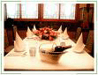
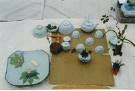

목회자와 교회 리더(장로,권사) 대상

성지순례 안내 및 교회문제 해결 프로그램
주로 목회자 그룹과 교회 리더(장로,권사) 대상으로 성지순례 관련, 또는 교회문제 해결을 위한 프로그램으로 준비되어 있습니다.
1. 테이블 매너(호텔 식사예절), 기내예절
- 각종연회, 모임, 해외 출장 등에 필요한 호텔식사예절 및 기내예절
2. 문제해결 프로그램 및 세미나
- 단체
- 교회의 내무적인 문제발생의 사례 및 해결을 위한 세미나
- 개인
- 교회 내부문제 해결 프로그램 - 목회자가 직접 직분자나 성도에게 말하기 어려운 사항에 대하여 직분자 또는 성도들을 대상으로 강연을 통해 주님의 말씀으로 문제 해결
3. 성지순례 프로그램
- 성지순례를 위한 안내 프로그램
- 코스 및 일정안내
- 예상소요경비 및 현지안내 가이드
- 항공표 및 호텔 예약업무 대행
성도들을 위한 프로그램

교회신도 또는 교회내 특정그룹 별로 특화된 예절교육과
어린이를 위한 예절교육 프로그램이 준비되어 있습니다.
1. 제직자를 위한 예절교육
- 교회 재직자를 위한 대인관계기법, 대화법, 인사법, 용모 및 복장예절에 대한 강연
2. 안내 및 봉사위원을 위한 친절교육
- 안내 및 봉사위원의 자세, 기독교적 의미의 봉사와 방법
- 인사법, 복장예절, 대화예절, 방문예절
- 생활에티켓과 매너 강연
3. 기독교인을 위한 교회매너교육
- 기독교인으로써의 바른자세와 마음가짐
- 교회안에서 지켜야 할 예의와 매너
- 교회밖에서 교인으로써 지녀야 할 태도와 자세
4. 구역장의 매너와 에티켓
- 구역장의 방문예절 과 에티켓
- 성경적 리더쉽과 대인관계 기법
5. 어린이를 위한 어린이 예절교육
- 어린이들을 위한 일상예절과 식사예절
- 하나님의 귀한 자녀로 양육되기 위한 인성교육
맞춤 강연
상담을 통하여 특정 그룹이나 집단을 대상으로 한
메세지의 전달이나 문제해결을 위한 맞춤형 강연도 가능합니다.
1. 메세지 전달과 문제해결 기법
- 목회자가 직접 성도들에게 전달하기 어려운 사안에 대한 메시지 전달
- 장로와 목회자 사이의 신뢰회복을 위한 메시지 전달
- 평신도와 직분자 사이의 믿음과 유대강화를 위한 메세지 전달
2. 시련극복과 신뢰회복 방안
- 강연을 통해 교회내부에 잠재한 시련극복과 문제해결을 위한 방안
- 성도와 장로, 목회자 사이의 신뢰회복을 위한 방안
- 기타 교회내부 문제 해결을 위한 강연
3. 기타 맞춤형 강연
- 교회의 요청에 의한 맞춤형 강연
목회자 여러분의 사역과 교회를 위해
한국교회 예절교육원이 함께 하겠습니다.
언제든지 상담을 신청해 주십시오.
HP: 010-6336-4320
Email: kangorchid@hanmail.net